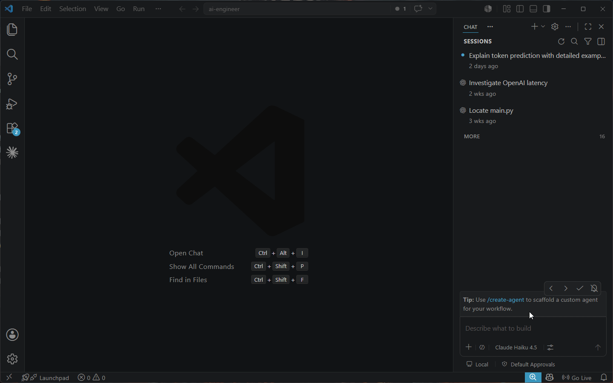

Hold a key, speak, release — clean text appears right at your cursor, in any app.
Free forever · MIT licensed · your voice never leaves your PC

A focused, fast, private voice-typing tool — not a subscription, not an account, not your data in someone's cloud.
Local mode runs entirely on your PC. No cloud, no account, zero network calls. Audio is deleted the moment it's typed.
Transcribes while you speak, so text lands in ~1 second on release — the same whether you spoke for 5 seconds or 5 minutes.
Open source (MIT). No subscription, no per-word billing, no upsell. Wispr Flow is $14/month; VoiceFlow is $0.
Email, chat, code editor, browser, terminal. If you can type in it, you can talk to it — pastes right at your cursor.
Default Parakeet (fast, accurate English) or Whisper for other languages — or bring an OpenAI key for the cloud.
Strips “um / uh / you know”, auto-punctuates, fixes your jargon with a custom dictionary, and optional AI polish.
No setup beyond a one-time model download. Then it's three steps, forever.
Press and hold Ctrl + Alt. A subtle recording indicator appears.
Speak naturally — for a sentence or several paragraphs. It's transcribing as you go.
Let go. Clean text appears at your cursor in about a second. That's it.
Windows now; macOS & Linux via pipx. Package-manager installs skip the SmartScreen prompt.
scoop bucket add voiceflow https://github.com/apgodlike/voiceflow
scoop install voiceflowVerified by SHA-256, auto-updates. No “Unknown publisher” prompt.
pipx install "voiceflow-dictation[local]"
voiceflowRuns from source — cross-platform, no installer, no signing prompt.
Download VoiceFlow-Setup.exeGrab the latest release. Unsigned for now → “More info → Run anyway”.
On first launch a short wizard sets up local (no key) or cloud mode and downloads your chosen model once. Then hold Ctrl+Alt and talk.